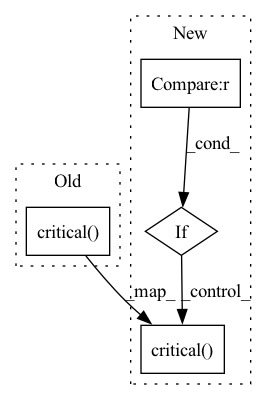

Pattern ID :31829

Before Change
qi_inferable_quantizers_constants.MAX_RANGE: node_w_qc.weights_quantization_params[RANGE_MAX].flatten(),
qi_inferable_quantizers_constants.CHANNEL_AXIS: node_w_qc.weights_channels_axis}
else:
Logger.critical(f"Not supported quantization method for weights inferable quantizers.") // pragma: no cover
def get_activation_inferable_quantizer_kwargs(node: BaseNode) -> Dict[str, Any]:
After Change
qi_inferable_quantizers_constants.MAX_RANGE: node_w_qc.weights_quantization_params[RANGE_MAX].flatten(),
qi_inferable_quantizers_constants.CHANNEL_AXIS: node_w_qc.weights_channels_axis}
elif quantization_method in [QuantizationMethod.LUT_POT_QUANTIZER, QuantizationMethod.LUT_SYM_QUANTIZER]:
return {qi_inferable_quantizers_constants.NUM_BITS: node_w_qc.weights_n_bits,
qi_inferable_quantizers_constants.CLUSTER_CENTERS: node_w_qc.weights_quantization_params[CLUSTER_CENTERS].flatten(),
qi_inferable_quantizers_constants.THRESHOLD: node_w_qc.weights_quantization_params[SCALE_PER_CHANNEL].flatten(),
qi_inferable_quantizers_constants.PER_CHANNEL: node_w_qc.weights_per_channel_threshold,
qi_inferable_quantizers_constants.CHANNEL_AXIS: node_w_qc.weights_channels_axis}
// TODO: Add MULTIPLIER_N_BITS & EPS to node quantization config
else:
Logger.critical(f"Not supported quantization method for weights inferable quantizers.") // pragma: no cover
def get_activation_inferable_quantizer_kwargs(node: BaseNode) -> Dict[str, Any]:
In pattern: SUPERPATTERN
Frequency: 3
Non-data size: 4
Instances
Fragment ID: 93056248
Project Name: sony/model_optimization
Commit Name: d8d0df9bb1c0b915e5b1c720337c68daa0e5b80d
Time: 2023-03-15
Author: 78862769+elad-c@users.noreply.github.com
File Name: model_compression_toolkit/exporter/model_wrapper/pytorch/builder/node_to_quantizer.py
M Class Name: AnonimousClass
N Class Name: AnonimousClass
M Method Name: get_weights_inferable_quantizer_kwargs(1)
N Method Name: get_weights_inferable_quantizer_kwargs(1)
M Parent Class:
N Parent Class:
M File Name: model_compression_toolkit/exporter/model_wrapper/pytorch/builder/node_to_quantizer.py
N File Name: model_compression_toolkit/exporter/model_wrapper/pytorch/builder/node_to_quantizer.py
M Start Line: 49
M End Line: 49
N Start Line: 32
N End Line: 59
'>
Before Change
try:
return await self.websocket.send_bytes(request.SerializeToString())
except ConnectionResetError:
self.logger.critical(f"server connection closed already!")
async def send_dry_run(self):
Query the dry_run endpoint from Gateway
After Change
try:
return await self.websocket.send_bytes(request.SerializeToString())
except ConnectionResetError:
if retry == self.max_attempts:
self.logger.critical(f"server connection closed already!")
raise
else:
wait_time = random.uniform(0, min(self.initial_backoff*self.backoff_multiplier**(retry-1), self.max_backoff))
await asyncio.sleep(wait_time)
'>
Fragment ID: 93056247
Project Name: jina-ai/jina
Commit Name: d0838d37de983a687c743fd969b74deea5937b65
Time: 2022-09-27
Author: joan.martinez@jina.ai
File Name: jina/clients/base/helper.py
M Class Name: WebsocketClientlet
N Class Name: WebsocketClientlet
M Method Name: send_message(2)
N Method Name: send_message(2)
M Parent Class: AioHttpClientlet
N Parent Class: AioHttpClientlet
M File Name: jina/clients/base/helper.py
N File Name: jina/clients/base/helper.py
M Start Line: 164
M End Line: 169
N Start Line: 188
N End Line: 199
'>
Before Change
qi_inferable_quantizers_constants.MIN_RANGE: np.asarray([node_qc.activation_quantization_params[RANGE_MIN]]),
qi_inferable_quantizers_constants.MAX_RANGE: np.asarray([node_qc.activation_quantization_params[RANGE_MAX]])}
else:
Logger.critical(f"Not supported quantization method for inferable quantizers.") // pragma: no cover
def get_weights_quantizer_for_node(node: BaseNode) -> BasePyTorchInferableQuantizer:
After Change
qi_inferable_quantizers_constants.MIN_RANGE: np.asarray([node_qc.activation_quantization_params[RANGE_MIN]]),
qi_inferable_quantizers_constants.MAX_RANGE: np.asarray([node_qc.activation_quantization_params[RANGE_MAX]])}
elif quantization_method in [QuantizationMethod.LUT_POT_QUANTIZER]:
return {qi_inferable_quantizers_constants.NUM_BITS: node_qc.activation_n_bits,
qi_inferable_quantizers_constants.CLUSTER_CENTERS: np.asarray(
[node_qc.activation_quantization_params[CLUSTER_CENTERS]]),
qi_inferable_quantizers_constants.THRESHOLD: np.asarray(
[node_qc.activation_quantization_params[THRESHOLD]]),
qi_inferable_quantizers_constants.SIGNED: node_qc.activation_quantization_params.get(SIGNED)}
// TODO: Add MULTIPLIER_N_BITS & EPS to node quantization config
else:
Logger.critical(f"Not supported quantization method for inferable quantizers.") // pragma: no cover
def get_weights_quantizer_for_node(node: BaseNode) -> BasePyTorchInferableQuantizer:
'>
Fragment ID: 93056246
Project Name: sony/model_optimization
Commit Name: 733379c59cd54a0509db40778380a709742d4436
Time: 2023-03-16
Author: 57916763+lapid92@users.noreply.github.com
File Name: model_compression_toolkit/exporter/model_wrapper/pytorch/builder/node_to_quantizer.py
M Class Name: AnonimousClass
N Class Name: AnonimousClass
M Method Name: get_activation_inferable_quantizer_kwargs(1)
N Method Name: get_activation_inferable_quantizer_kwargs(1)
M Parent Class:
N Parent Class:
M File Name: model_compression_toolkit/exporter/model_wrapper/pytorch/builder/node_to_quantizer.py
N File Name: model_compression_toolkit/exporter/model_wrapper/pytorch/builder/node_to_quantizer.py
M Start Line: 79
M End Line: 79
N Start Line: 64
N End Line: 88